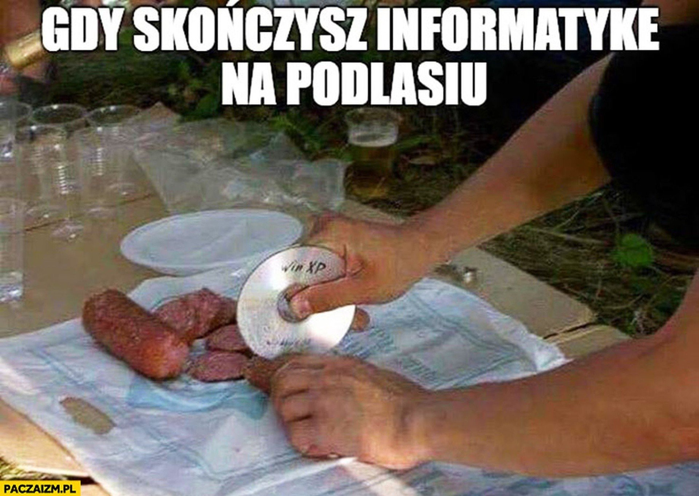
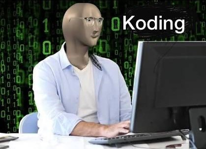

Potrafię rozwiązywać zadania konkursowe średniej trudności w javie i pythonie. Znam i potrafię obsługiwać programy do tworzenia i obróbki obrazu, np: Photoshop, Gimp, Darktable, umiem stworzyć prostą animację w blenderze. Umiem obsługiwać Excella, Worda, Powerpointa. Umiem stworzyć prostą stronę w HTML. Potrafię drukować na drukarce 3D projekty pobrane z internetu. Dobrze znam budowę komputera, a także potrafię tworzyć proste i trochę bardziej skomplikowane obwody. Świetnie władam ręcznymi jak i elektrycznymi narzędziami do obróbki materiałowej. Potrafię napisać prosty program w C do obsługi modułu arduino.

Zamierzam zwiększyć swoje umiejętności programistyczne i usprawnić interface moich programów. Chcę nauczyć się tworzyć własne modele 3D do druku w drukarce, stworzyć drążek do symulatora lotu i zaprogramować go w programie FreeJoy oraz spróbować stworzyć na niego własny prosty software w wybranym języku. Chciałbym stworzyć ciekawe programy i strony internetowe, zgłębić tajniki wyszukiwania luk w programach.
Zamierzam studiować na Politechnice, procować w dziedzinie programowania statków powietrznych lub innych maszyn. Rozwarzam również opcję pracy w studiu tworzenia gier komputerowych lub innych programów, myślę też o fizyce jądrowej.

| Nauka w: |
| 28 LO im. Jana Kochanowskiego |
| Warszawa |
Zrobiłem film o sobie, zapraszam do ogladania
www.youtube.com/watch?v=dQw4w9WgXcQ
Jan Kaczmarski 2024